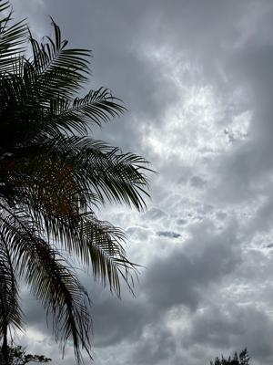
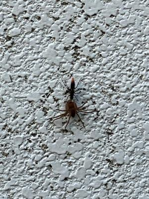

うるがいの話 ある日
最新: いろいろな出来事【うるがいの話 ある日】とは 一日だけのプログです
『うるがいの話』の最新一日だけのプログで、通信料が少なく経済的だ。カニの画像をクリックすると全ての日付が載る『うるがいの話』サイトを表示します
|
|
【うるがいの話】 うるがい(ｳﾙｶﾞｲ urugai)とは、『もずくがに』の名前でとても大きくなります。 |
|---|---|
|
|
【カミマヤーの話】 猫のことを方言でマヤーといいます。カミマヤー（kamimayaa）とは、神の猫のことです。 |
|
【たながぁの音楽】 たながぁ（ﾀﾅｶﾞｰ tanagaa）とは手長えびのことで、何種類かあり大きいのは車 エビぐらいになります。 |

|
【ぶながぁの話】 ぶながぁ(ﾌﾞﾅｶﾞｰ bunagaa)とは、赤い髪の毛、赤い身体、そして身長は１ｍ２０ｃｍ ぐらい、川の蟹を食べているの目撃された。場所は沖縄県国頭郡大宜味村のと ある村僕の隣近所に住んでいる爺さんから、聞いた話です。 |
|
|
【ギーマの話】 ギーマ(giima)とは、山原の里山に咲くスズランに似た、 花を付けます。実は食べられます、 気が付くと口の周りが紫になっています。 |
2023年06月11日 (日）いろいろな出来事
15:17
 
一昨日の朝、二階にいる私にヨメが、『大変！大変！、子猫の首が網にかかっ
て死ぬ！、早く網を切って』と叫ぶ。急いで、玄関に降りていくとハサミを持
って私に手渡す（自分でやれば、早いのにと思ったが。駐車場の朝顔のための
ネットに灰色の子猫が、足が網に絡んでいた。ん、首は？ともう一度確認する
と確かに、きつく首の周りに巻いていた。場数をふんでいる私は、冷静にハサ
ミで、網を切り子猫を助ける。お礼も言わず、子猫は逃げていった。
昨日、夕方庭で水を撒こうとしていたら、私を刺したあの蜂ヤロウが、蜘蛛を
ひきづって壁を登っていった。黙って注視する。
早朝、県立図書館の帰りに、信号待ちをしているところを救急車が、私の車を
追い越していった。そして、１キロメートルほど行ったところ坂の交差点の歩
道の近くで、救急車が止まっていた。ん、その手前では救急隊が、道路に寝転
んだ男性の心臓マッサージを仕掛けた。ヤバ、近くには白衣を着た若い医者が
近づこうとしたが、救急隊に止まれと指示を受ける。男性が、膝を曲げた、オ
ー、意識はあるようだ。そうこうしている間に、交差点の信号が緑になり、私
は、すぐ右側の彼らを見ながら現場を去って行った。まだ、パトカーも来てい
なかった。（この、坂道交差点は事故が多く、前も大事故の現場をみた）
昨日アップした、ユーチューブ動画の箏のキーが気になり、１オクターブ下げ
て再度アップした（テイク４ジャ）。昼過ぎ、やっとまともな雨が降る。
１５時１２分 ビットコインの総資産 ￥１０、４５９（↑６３）